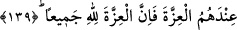

137- Îman edip sonra inkâr edenleri, sonra yine îman edip tekrar inkâr edenleri,
sonra da inkârlarını arttıranları Allah ne bağışlayacak, ne de onları doğru yola
iletecektir.
“Îman edip” bunlar, Mûsâ (a.s.)’a inanan yahûdîlerdir. “sonra” buzağıya taparak
“inkar edenleri,” Mûsâ (a.s.) Tûr-ı Sînâ’dan döndükten “sonra yine îman edip” daha
sonra Îsâ (a.s.) ve İncil’i “tekrar inkar edenleri,” Muhammed (s.a.v.)’i inkar ettikleri
için “sonra da inkârlarını arttıranları” “Allah” küfürlerinde devâm ettikleri
müddetçe “ne bağışlayacak, ne de onları doğru yola iletecektir.” Onları İslâm yoluna
muvaffak kılmayacaktır. Fakat cezâ olarak onları küfürleri üzere yardımsız ve perîşan
bir halde bırakacaktır.
Eğer “Allah bir defâ inkar eden kişiyi bağışlamaz. Öyleyse bu âyetteki “sonra inkar
ettiler, sonra yine inandılar, sonra inkar ettiler” buyurulmasının faydası nedir?” diye
sorulsa cevâbı şöyledir: Kâfir, îman ettiğinde küfrünün bağışlanacağı söylenmiştir.
Bundan sonra tekrar inkar ederse o zaman birinci küfrü bağışlanmamış olur. Böylece o
kimse küfrün bütününden hesâba çekilir.
138- Münâfıklara, kendileri için acı bir azap olduğunu müjdele!
“Münafıklara acı bir azabın kendilerinin olacağını müjdele.” Öyle ki o azâbın elem
ve ızdırabı kalplerine ulaşacak. Bu da, âyetin münâfıklar hakkında indiğine delalet
etmektedir. Çünkü onlar zâhiren îman ediyorlar, daha sonra gizlice inkar ederek, ısrarla
nifakta ve mü’minlerin arasını bozmakta diretiyorlar.
Âyette “uyar” ve “haber ver” değil de onların yerine “müjdele!” buyurulması onlarla
alay etmek içindir.
139- Mü’minleri bırakıp da kâfirleri dost edinenler, onların yanında izzet (güç ve
şeref) mi arıyorlar! Bilsinler ki bütün izzet yalnızca Allah’a âittir.
“Mü’minleri bırakıp da kâfirleri” yâni yahûdîleri “dost edinenler,” Münâfıklar
yardımda ve nusrette samîmî mü’minleri bırakıp yahûdîleri dost ediniyorlar. Gerçekten
münâfıklar yahûdîlerle dostluk kuruyorlar ve birbirlerine: “Muhammed (s.a.v.)’in işi
(dini) tamam olmaz. Yahûdîleri dost edinin.” diyorlardı. “Onların yanında izzet mi
arıyorlar?” Yâni kâfirlerle dostluk kurarak onlarda kuvvet ve galibiyet mi bekliyorlar?